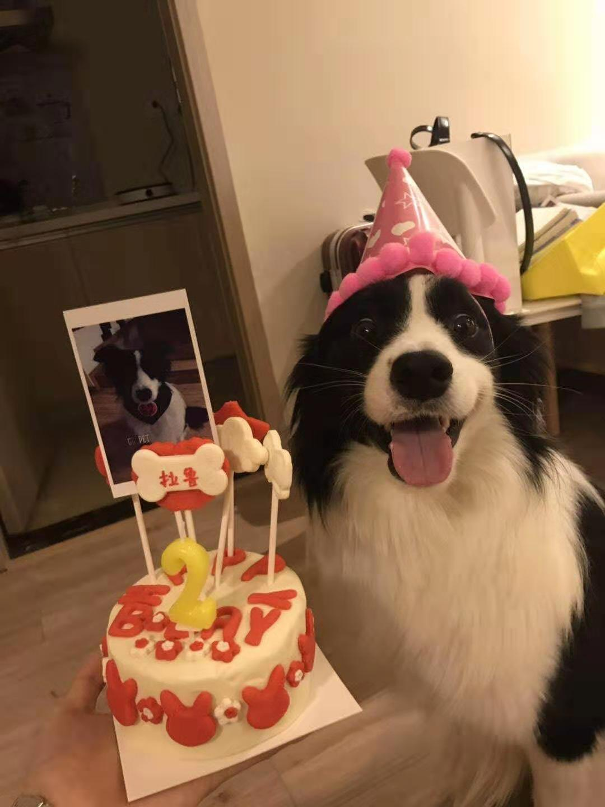

Hi there! My name is Joseph Yang, currently an undergraduate at the University of Massachusetts Amherst studying
Informatics and Linguistics. I have a cute boarder collie Lalu and he is 4 years old! Here is a picture of him:
If you'd like to know more about my degree programs and what I study, click on the links below!

Image credit to Joseph Yang
Here is how you can get in touch with me: My Education Email Feel free to shoot me an email!
If you're on Linkedin, feel free to connect me!
And here's a photo of me! ------>